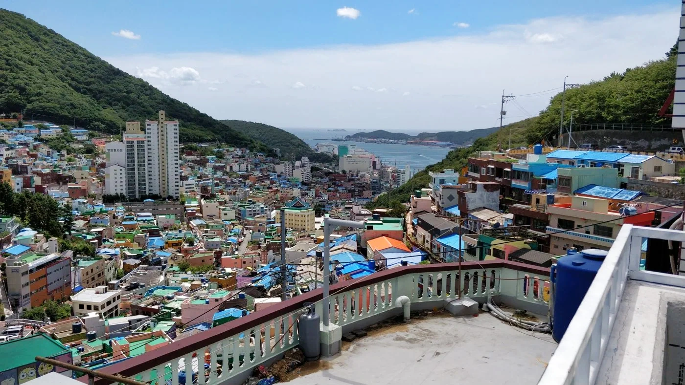

Capítol 03 / 06
Busan
Els colors de Gamcheon, els mercats de peix i els temples a la vora del mar.

Records del camí
Veure el mapa ↓Els llocs del capítol
Les fotografies geolocalitzades i les etapes del viatge. El traçat entre etapes és orientatiu.
Recorregut terrestreVol a Okinawa / tornada